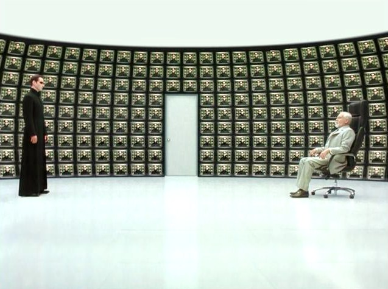
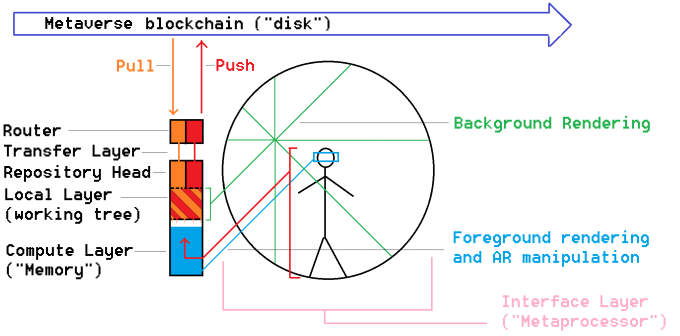

The Sensory Indulgence Tank

@@@@@@@@@@@@@@@@@@@@@@@@@@@@@@@@@@@@@@@@@@
@ The Sensory Indulgence Tank @
@ @
@ by: RenownedPsychohistorian (2016) @
@ @
@@@@@@@@@@@@@@@@@@@@@@@@@@@@@@@@@@@@@@@@@@
In the quixotic quest for the self, few have gone as far (or far out) as neurophysiologist
Dr. John C. Lilly (1915–2001). “I have explored,” he wrote in 1977, “and have voluntarily entered
into domains forbidden by a large fraction of those in our culture who are not curious, are not
explorative and are not mentally equipped to enter these domains.”
Today, his excesses receive as much attention as his achievements. He invented the world’s first
sensory deprivation tank, but almost drowned in it while high on psychedelics. He also pioneered
the field of dolphin communication, helping enact the Marine Mammal Protection Act of 1972. But
his lab’s unorthodox experiments — like jerking off dolphins to completion and injecting them with
LSD — ultimately discredited the field for decades.
After a promising start to a career that saw him make contributions to the fields of biophysics,
neurophysiology, electronics, computer science, and neuroanatomy, Lilly was by the 1970s on
science’s radical fringe, unable to secure government grants or publish in academic journals. He
spent his days in his deprivation tank high on ketamine, allegedly communicating with aliens.
~From https://timeline.com/neuroscience-doctor-drugs-lsd-c17d5e84c653#.ks6mtbhde
This guy.
I suppose it /theoretically/ could work if you had an initial state vector that was close enough to matching that of a dolphin with enhanced pattern recognition attained through precision doses of LSD...but the guy didn't know jack shit about dolphins before he started, so that wasn't the case. if you wanted it to work, you'd need someone who was like a dolphin-whisperer beforehand.
..but...
technology has progressed to the point where I'm pretty sure you don't actually need the psychedelics to do this kind of thing, with a much more productive result. Essentially, you design the inverse of a sensory deprivation tank-
In the collective unconscious, dark = 0 = False = hidden = evil = the "Left Hand Path."
These things are associated with the fringe- with bad things, and twisted outcomes. Disorder is the opposite of order, and disorder is seen as bad because it represents an increase of entropy, which threatens the survival of an ordered species such as mankind.
As the sensory deprivation tank incorporates many dark elements, and is concerned with creating false visions from gazing into the nothingness (hallucinations). Therefore, the user of a sensory deprivation tank will be guided along the "left hand" neural pathway, with associated results.
In the collective unconscious, light = 1 = True = present = good = the "Right Hand Path."
These things are associated with concepts like heaven, happiness, and love. The trend away from entropy is seen as good because it contributes to the survival of ordered species.
Because of this fact, I propose that we build a "sensory indulgence 'tank.'" It'd be pretty easy, and would cost less than 10k all told to create a convincing proof of concept.
You'd construct it similarly to the human eye, essentially creating a "theme ride" that would make it possible to emulate the experience of sitting behind someone's eyes. You use auditory/visual/spatial tricks like these:
to bypass the mind's conception of movement and "feeling," and a simple game tutorial to retrain the user into the context of the system's "controls."
The environment is rendered in the "background," on the interior of the sphere. Something like Google's Project Soli could be used to provide high-fidelity near-field gesture control over the data rendered on the interior surface. The user could select regions of information from the walls and make a local working copy of it by way of a holographic headset like the Meta2, essentially "copy/pasting" regions of information from the walls into a local computer and interacting with the copy before merging it back into the streaming data on the "walls." To save money on curved screens, it would probably be easier to use a thin layer of still water backed by a dark surface and project onto it.
Example:
--------
There is a forest rendered on the walls.
You reach out and "grab" a tree.
The tree is rendered on your headset in an interactive manner.
You then put a cat in the tree, rendering the changes on the local machine, then push it away.
Your local changes are merged with the data on the walls using a version control system.
"Publishing" content would simply involve merging with ever-increasingly stable branches as
you approached the "trunk" (service backbone).
The Blockframe Client
A rough schematic for a client built to interact with the proposed service is shown below:

As all existing data can be easily represented in a format that can be "read" and rendered by an engine (see "The Metalink Protocol"), while providing universal compatibility with all future services- you just write a system that consumes and renders this data in "illusory hyperbolic n-space." This engine would be very lightweight and simple to code using existing stacks (it's essentially a kind of HTTP protocol for transmitting browser windows over 256-bit encrypted blockchain a la bitcoin, but way faster), at least insofar as getting a highly convincing proof of concept built.
Every aspect of the machine can be made more and more convincing, but the point is that you only have to trick the mind once to get permanent "root access" to the "electro-colloidal" system of semantic projections which influences our neurology (see Korzybski's Science and Sanity for more information)- the "universal language," if you will, or the "universal API" if you'd rather.
What you end up with is a "workstation" that reduces the latency between the senses, thoughts, and rendered data to the maximum degree allowed by our current biology. At the same time, we tap into subjective time-dilation by massively optimizing the amount of data that can be consumed per second of life.
Once you've got all that working, if you're still not satisfied with having a portal to heaven in your back bedroom, you can set up a distributed broadcast network that links all of these devices together. A step further, you pipe all of the public streams into a network of deep-learning self-modifying ASICs that perform ternary logical operations (as opposed to binary), essentially trying to brute-force likely possible random outcomes. At that point you've developed Asimov's psychohistory.
But if you're still not satisfied, you can close off the ASIC network from external input and "speed up time" within the network, by directing all outputs back into all inputs in a torus interconnect. You can capture a snapshot of a node in the network (state vector) and hook it back up to the main network after a while, and I'd argue that its output would be fundamentally indistinguishable from intelligently created output. So now we have strong AI.
But if you're still not satisfied, you can take all of the data and pipe it into a massive radio telescope, and shoot all of it at stars that could have Dyson spheres around them (such as KIC 8462852 and EPIC 204278916). A civilization advanced enough to build a Dyson sphere would theoretically have a computer capable of brute-forcing a 256 bit TLS hash, and when they decrypted it, they would receive the mathematically precise state vector of the aggregate streaming sensory data of the human race. As it is likely that any civilization with a Dyson sphere also has massively-accelerated AIs capable of n-FLOP computation, said AIs would likely be able to assimilate said data into itselves and reconstitute it perfectly. So now we have attained functional immortality.
The next stage is networking all of the Dyson civilizations, and getting their aggregate streams collected by scaling the initial protocol. Then you figure out a way to encode it onto a high-energy photon beam (basically make a giant computer-controlled sun) and shoot the carrier wave into the black hole at the center of the universe, essentially "writing it to the cosmic hard drive."
Now we've saved all of our universe's information permanently, so someone in the next metaverse over can theoretically reconstitute it just like the Dyson AIs reconstituted the original carrier wave from Earth.
And round and round it goes. Sometimes I like to believe that that's what light is- it's all of the information from some universe forever ago that got fired into a black hole and came out a white hole somewhere else to start again.
What's the name of this magnificent "product," you ask???
the i
fuck apple.